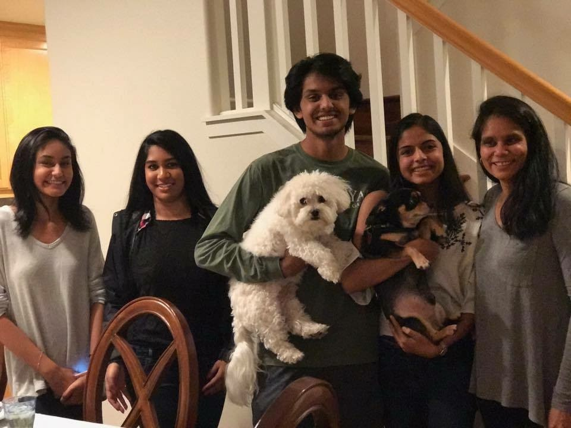

When some proud Son of Man returns to Earth,
Unknown to Glory but upheld by Birth,
The sculptor's art exhausts the pomp of woe,
And storied urns record who rests below:
When all is done, upon the Tomb is seen
Not what he was, but what he should have been.
But the poor Dog, in life the firmest friend,
The first to welcome, foremost to defend,
Whose honest heart is still his Master's own,
Who labours, fights, lives, breathes for him alone,
Unhonour'd falls, unnotic'd all his worth,
Deny'd in heaven the Soul he held on Earth:
While man, vain insect! hopes to be forgiven,
And claims himself a sole exclusive heaven.
Oh man! thou feeble tenant of an hour,
Debas'd by slavery, or corrupt by power,
Who knows thee well, must quit thee with disgust,
Degraded mass of animated dust!
Thy love is lust, thy friendship all a cheat,
Thy tongue hypocrisy, thy heart deceit!
By nature vile, ennobled but by name,
Each kindred brute might bid thee blush for shame.
Ye! who behold perchance this simple urn,
Pass on, it honors none you wish to mourn.
To mark a friend's remains these stones arise;
I never knew but one—and here he lies.
Personal Notes:
May 2018: In memory of Coco
Coco with his brother Spot, undated.
Coco & I in the backyard in May 2016.
Coco on Thanksgiving 2017.